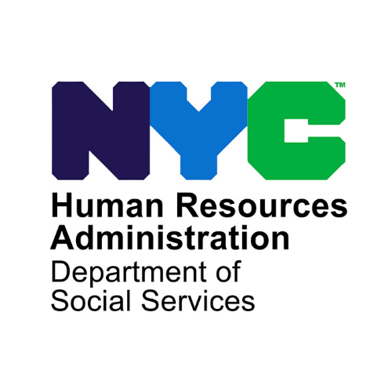
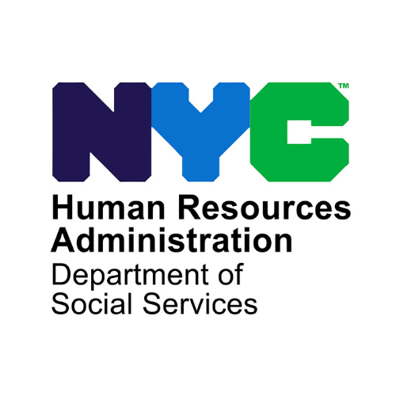

Purpose
InfoScape is a web app to help New Yorkers find useful living resources around them. Whether you're trying to find a cleaner neighborhood to move to, a place to get fresh produce, quality childcare, or even checking the safety of drinking water near your home or work, The app makes it easy to find information in one place. The app is simple to use and helps people make better choices for a better living standard.
Data Source and Key Features
The source of data for the app comes from NYC Open Data. I used the following datasets to create the first 4 key features in the app:
- CleanCityScape - 311
- NourishWellScape - NYC Farmers Markets (Underway!)
- KidsCareScape - DOHMH Childcare Center Inspections
- VivoWaterScape - Self-Reported Drinking Water Tank Inspection Results (Underway!)
Are you searching for a clean neighborhood in New York City, or simply curious about how New
Yorkers opine on the cleanliness of the Big Apple? Check out this Scape.
Fouteen years of 311 cleaness complaints in NYC, along with real-time updates on current concerns.
Families should know the quality of childcare centers, and transparent information about
services near their home or beyond. Check out this Scape and find the good child care easier
than ever.
Browse with ease through all DOHMH-registered childcare centers, with inspection information through
tooltips.
I wanted the app to be easy for anyone to use, so I designed it with clear visuals and a simple layout. You can get to the information you need with just a few clicks, whether you're new to using data or more experienced.
Inspired by Service and Innovation, Built to Inspire
In 2023, I attended Princeton’s AI4ALL program,
which left me deeply aware of the ethical dimensions of AI and how it could impact my community. Inspired by my experience on NYC Youth Leadership Council  ,
where I worked with the Human Resources Administration , I began to see just how vital it is for people to have accessible resources that truly meet their needs.
This perspective led me to create InfoScape, a project aimed at connecting New Yorkers with essential services by translating data into easily navigable insights.
,
where I worked with the Human Resources Administration , I began to see just how vital it is for people to have accessible resources that truly meet their needs.
This perspective led me to create InfoScape, a project aimed at connecting New Yorkers with essential services by translating data into easily navigable insights.
Through my studies in the Data Distinction program at Browning , I learned how to analyze and transform data into compelling narratives that could be used for real-world impact. While building InfoScape, I became increasingly conscious of making data accessible and understandable, so users could find practical help at a glance. Exploring the NYC Open Data Gallery was invaluable to me, as the resources and technical documentation there shaped each phase of InfoScape’s development, highlighting the incredible community effort behind open, free data.
Sharing knowledge is something I’m passionate about, and I hope the documentation I created for InfoScape can inspire others to develop their own projects, make improvements, and use open data like NYC’s to create meaningful change in their communities.
Technical Documentation
- Website framework - Bootstrap HTML, CSS, javascript
- Data visualization, geomapping tools - D3 js, NVD3 js, Leaflet js
- Data analysis - SQL/Python for data analysis, D3 for inline data filtering
- Data sources - NYC Open Data
- Code and repositories